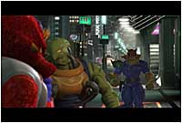

|
| 梅雨の中晴れとはまさにこのこと、朝からこれ以上ないくらいの青天＋猛暑のなかを、"次世代ワールドホビーフェア"が開催されている幕張メッセにやって来た編集長。今回は任天堂ブースで展示されている、『F-ZERO GX』を体験プレイしに来たのです。張り切ってやって来たのはいいのですが、あまりにもよく晴れていて、すでに気温は30℃以上…スピードの前に暑さに負けそうなのが困ったところ。けれどもそんな暑さにもめげず、たくさんのお客さんが新作ゲームをひとめ見ようと、ぞくぞくと幕張メッセに集まっていました！
|
前回のホビーフェアに続いて出展された『F-ZERO GX』。発売目前ということもあり、前回以上に注目が集まっていた。試遊台の前には 時速2000kmという東京-大阪間を１５分で駆けるこの驚異のスピードを体感しようと、すでに長蛇の列が作られています。遊園地のアトラクションのように『20分待ち』との表示が出ているのですが、律儀な編集長はちゃんと最後尾に並んでそのようすを観察してみました。
まず、グラフィックの美しさに驚きです。アーケード版『F-ZERO AX』と比較されがちですが、はっきり言って遜色ないと言っていいでしょう。というよりも、まったく同質のようです。後ろから眺めているだけでも、その美しさとスピード感に酔いしれます。そして試遊台で遊んでいるみなさん、とってもお上手…その腕前を私に分けてくださ〜い。
順番が回ってきたので、コントローラを握ります。まずは「グランプリモード」でコースを選択。初めてのプレイで緊張しているので、コースレイアウトがシンプルな「ベガスパレススプリットのオーバル」を選択します。数あるマシンのなかから選んだ機体は、バランスが取れた"ブルーファルコン"です。最初は選択できるマシンが４機だけですが、ゲーム中のショップで新しいマシンを購入することができます。いずれ全部のマシンで走ってみたい気分。マシンの最高速や加速のバランスを調整して、いざレーススタートです！ が、後ろに並ぶ沢山の人たちにプレイを見られているので、「あっという間にリタイアしたら、すごく恥ずかしいなぁ…」と、ちょっと違う緊張もしていたりする編集長です。ドキドキ。
３，２，１，GO！ と、勢いよく飛び出しました。うわっ、速い！ 速いです！ 「時速2000kmオーバー」を謳っているのはダテではありません！未来都市が流れるように後方へ消えていき、うねるコーナーを曲がり、通過すると一時的に加速するダッシュプレートを通り…とやっていると、まるで全身が風にあおられているような錯覚におちいります。２週目からは"ブースト"が使用可能になり、Yボタンを押すことで爆発的な速さをマーク。一気にほかのマシンを追い抜いていきます。ときどき"ピットエリア"でエネルギー補給をしながら、エネルギーがたまったらブーストで加速。ダッシュプレートとブーストを組み合わせると、息もつかせぬ加速を楽しむことができます。それを繰り返しているうちに、なんと編集長は一位でゴールしたのでした！ とても嬉しいでーす。景品のライトをもらっちゃいましたよ。ちょっとカッコイイでしょ？
 いい気分のまま、つぎは「ストーリーモード」にチャレンジです。与えられるミッションを次々クリアすることで、ハイクオリティなムービーで綴られるキャプテンファルコンのオリジナルストーリーが楽しめるというもの。最初は「コース内にあるすべてのカプセルを60秒以内に回収せよ」というミッション。コース自体は単純なのですが、微妙なスティック操作と確実なスピードを要求されるので、簡単に見えて意外にそうでもなかったりします。などと言いわけしたのは、あえなくタイムアップでリタイアしたからです…ガックリ。が始まり
つぎのミッションは"サムライゴロー"との対戦です。さきにゴールしたほうが勝ち！なのですが、走行中はサムライゴローの手下が、左上の土手から岩を落として邪魔をしてきます。右は崖っぷち、左からは落石。うまくあいだを縫い、緩急をつけて走行しないと、落ちるか潰されるかどちらかの運命が待っているという寸法です。えー、もちろん潰されました…。でも、ストーリーモードをやっているだけでも、テクニックがめきめき上達していきそうです。時間があったら、もっとやりたいですよ〜。
むずかしいことを一切考えず、ただただスピード感を楽しむという一点に、ゲームの魅力が集約されているように感じました。ブーストをかけて走っているだけでも、ほんとうに気持ちがいいのです！そこはシンプルだけに、もっとも大切なポイントではないでしょうか。レースゲームにチャレンジしたことがない人はもちろん、レースゲームが大好きな人も絶対に満足できるはず。
>>>ところでアーケード版の『F-ZERO AX』のほうはどんな感じかな？
|
|
|